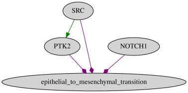

Connect to downstream Gene Ontology terms.
This notebook showcases the functionality of Omniflow that connects the existing nodes of a network to a phenotype of interest.
[1]:
%%time
from neko.core.network import Network
from neko._visual.visualize_network import NetworkVisualizer
from neko.inputs import Universe
from neko._annotations.gene_ontology import Ontology
import omnipath as op
CPU times: user 3.04 s, sys: 84.7 ms, total: 3.13 s
Wall time: 7.5 s
1. Build network
Please see the Network building tutorial for detailed explanations of each step.
[2]:
genes = ["SRC", "NOTCH1", "FAK"]
[3]:
new_net1 = Network(genes, resources = 'omnipath')
[4]:
%%time
new_net1.connect_nodes(only_signed=True, consensus_only=True)
CPU times: user 13.4 ms, sys: 10 μs, total: 13.4 ms
Wall time: 13 ms
2. Connect to Gene Ontology (GO) term
The connect_genes_to_phenotype function retrieves genes from the official Gene Ontology API and looks for interactions between those genes and the current network. The GO accession is authoritative, so a phenotype label is not required. The argument compress replaces the connected GO genes with one node carrying the canonical GO term label.
Note
NeKo uses exact-term annotations by default. Set include_descendants=True when annotations propagated from more specific GO terms should also be included. Broad terms can return many genes, so specific terms are usually easier to interpret.
[5]:
%%time
new_net1.connect_genes_to_phenotype(id_accession="GO:0001837", only_signed=True, compress=True, maxlen=1, include_descendants=True)
WARNING:neko.core.strategies:Skipping GO gene without a usable network identifier: RNAcentral:URS000039ED8D_9606
WARNING:neko.core.strategies:Skipping GO gene without a usable network identifier: RNAcentral:URS00000A939F_9606
CPU times: user 109 ms, sys: 5.88 ms, total: 115 ms
Wall time: 6.39 s
[6]:
#Visualize network
visualizer1 = NetworkVisualizer(new_net1, color_by='effect')
visualizer1.render()

[ ]: